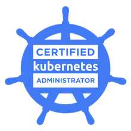
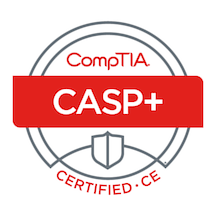

Orlando, FL
(843) 619-1048
curtis.nix@proton.me
linkedin.com/in/curtisnix/
WORK EXPERIENCE
Lacework, Remote - Technical Support Engineer
May 2023 - Current
Triage incoming issues from customers and account teams alike, identifying severity, and assisting the customer in resolving the issue. When applicable, documenting replication steps and authoring bug reports for product engineering teams to address bugs, while keeping the customer informed of the progress along the way.
Work on a rotating on-call schedule that requires night and weekend availability.
Work cross-functionally with Customer Success Managers and Sales Engineers with customer calls that require special post-deployment troubleshooting attention.
Contributes regularly as either an author or technical reviewer to in-depth, customer facing Knowledge Base articles to help customers with common issues with the product or configure advanced settings for various technologies or specific use cases.
Performed as a pivotal part of 3-person team that identified unused/unneeded cloud resources, coordinating with other teams across the company to inform and verify the teams no longer needed the resource. We then tracked the disposed of 150 of these unneeded collections of resources resulting in an estimated $30,000 per month of savings for the company.
DigitalOcean, Remote - Cloud Support Engineer
April 2022 - February 2023
Address tickets that span all available products, with issues that would range from configuring Virtual Machines, interacting with the platform API, to troubleshooting Kubernetes clusters.
Guide customers on best practices for firewall rule configuration, whether that be a cloud firewall or firewall software installed on Virtual Machine (iptables, ufw, firewalld).
Using tools like df and du for disk space issues, expanding or checking filesystems for errors, understanding/adjusting file and user permissions
Installation and troubleshooting of commonly used software like NGINX, Apache, WordPress, Docker, MySQL, etc.
Replicate networking problems, and troubleshooting issues using tools like ping, netcat, ip/ifconfig, traceroute, ss/netstat, nmap, etc.
WP Engine, Remote - Technical Support Specialist L2
December 2019 - April 2022
Monitored customer's dedicated LAMP servers for any problematic trends in resources or any increase in errors being logged, responding to any alerts in an eficient manner for fast issue resolution.
Worked as the Amazon Web Services subject matter expert for the support team, proactively documenting solutions to common problems. This included creating troubleshooting guides, along with example replies to customers' questions that communicate how products work in easily understandable terms.
Used tools like New Relic's APM for transaction tracing in order to help customers identify bottlenecks and other issues in their applications causing errors or slow response times.
Worked with Enterprise customers on highly complex technical issues, using experience to make decisions to resolve problems with little or no involvement from management.
Served as the first point of contact for escalated issues via chat or phone call, either solving the issue or effectively communicating with the appropriate team within the organization to solve the issue.
Actively mentored junior team members with any questions they may have throughout the shift, not only answering their questions but also
showing how to arrive at the answer with either a practical example or a link to the supporting technical documentation.
Fathom4, Charleston SC - Electronic Technician III
October 2016 - June 2019
Planned and documented the installation and integration of networking and computer systems.
Created over 350 physical network assets and developed the technical documentation for the creation and installation of each.
Created products in a development environment for Quality Control, before being moved to production.
Read and interpreted engineering documentation in order to install networking cabling and computer systems for 74 mobile military assets.
Documented the installation, inspection, and configuration of each asset during each stage of the integration process.
United States Marine Corps, Beaufort SC - Communications Maintenance Supervisor
May 2008 - May 2013
Demonstrated an exceptional work ethic, and ability to learn in a constantly changing environment that led to an appointment to a responsibility beyond experience.
Directed workflow for a team of six, documenting all maintenance and troubleshooting operations.
Transformed a failing maintenance department into a streamlined operation that met standards with increased eficiency, reducing the need for manpower by 80%.
Recognized and filled a need for a subject matter expert on the installation and support of networking devices in new developmental mobile military assets, resulting in being appointed project supervisor for install teams.
Resume Views:
EDUCATION
Western Governors University, - M.S. Cybersecurity and Information Assurance
College of Charleston, Charleston SC - B.S. Economics, minor in Mathematics
Marine Corps Communications Electronics School, 29 Palms CA - Certificate in Electrical Communications Repair
CERTIFICATIONS
CKA: Certified Kubernetes Administrator
 HashiCorp Certified: Terraform Associate (002)
HashiCorp Certified: Terraform Associate (002)
 Amazon Web Services Certified Solutions Architect - Associate
Amazon Web Services Certified Solutions Architect - Associate
Kubernetes and Cloud Native Security Associate
CompTIA Advanced Security Practitioner (CASP+) ce
SKILLS
Languages/Scripting: Python, YAML, BASH
Ticket/issue tracking: Zendesk, SalesForce, Jira
Documentation: Confluence, Guru
Virtualization/Containerization: Docker, Kubernetes, Vagrant
Cloud Platforms: AWS, DigitalOcean, some Azure
Webservers: Apache, NGINX
Source Control: Git, CodeCommit